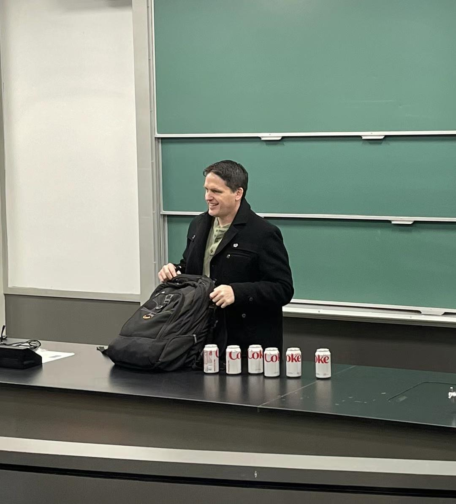

Here are my CV, my PhD thesis, and my Google Scholar page.
I post on math.stackexchange under the username littleO.
YouTube videos
Here are my machine learning videos and my
multivariable calculus videos.
Summer Zero Math Problem Sets
Multivariable calculus slides
Here are 250+ slides that I use when teaching Math 211: Calculus III.
Linear Algebra slides
Here are 300+ slides that I use when teaching Math 230: Linear Algebra.
Intro to Deep Learning slides
These slides give a quick introduction to deep learning using PyTorch.
Math notes
Below are a bunch of math notes I've written, which I'd like to eventually organize
and expand into an "intuitive vector calculus" textbook.